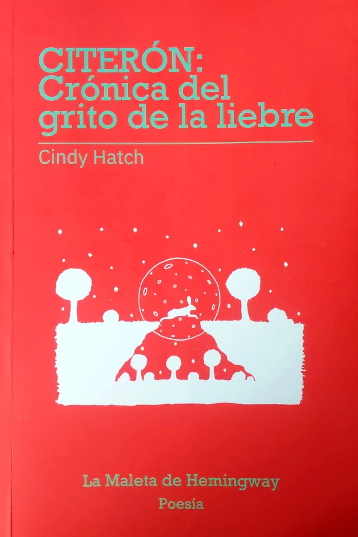

Buy my book
Citerón: crónica del grito de la liebre

«Con un envidiable manejo de los tiempos —tanto históricos como rítmicos—, Cindy
Hatch se distancia del inmediatismo de cierta poesía reciente y dialoga con la tragedia antigua de
Yocasta. Las tensiones entre este personaje femenino y su familia, su comunidad, el mundo, cobran
notoria importancia en el presente. Un presente de márgenes donde saltan las liebres. La poesía no es
más sacar una liebre del sombrero de un mago cuando todos la esperan. La poesía es acaso colocar algo
dentro de la liebre y zurcirla de manera imperceptible. Cindy Hatch lo ha logrado con especial
delicadeza».
Inti García Santamaría